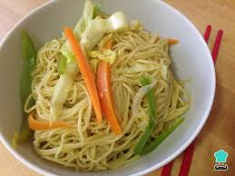

<https>
<title>Receita de Miojo</title>
<body background ="fundo007.jpg" link="#FF4500" vlink="#8B0000">

<center><font color="#2E8B57" face="comic sans ms"><u><h1>Receita de Miojo</h1></u></font>

</center>

<font color="#008080" size="5" face="comic sans ms"><h2>Ingredientes:</h2></font>

<font color="#4682B4" size="4" face="comic sans ms"><ul>
<li>Um Pacote de Miojo;</li>
<li>250 ml de Água;</li>
<li>Temperos.</li>
</ul></font>

<font color="#008080" size="5" face="comic sans ms"><h2>modo de Preparo:</h2></font>

<font color="#4682B4" size="4" face="comic sans ms"><ol>
<li>Ferver a água;</li>
<li>Acrescentar o Miojo na água quente;</li>
<li>Aguardar 3 minutos;</li>
<li>Temperar;</li>
<li>Servir.</li>

<table border="0" align="center" width="50%"><!--inicio da tabela border é a borda-->
<tr><!--abro linha-->

<td><a href="Receita2.html"> <center>Receita de Bolo de Chocolate</center></a></td>

<td><a href="Receita3.html"> <center>Receita de Pudim de Leite</center></a></td>

<td><a href="index.html"> <center>Wome</center></a></td>

</tr><!--fecho linha-->
</table><!--fim da tabela-->

</ol></font>
</body>
</https>
